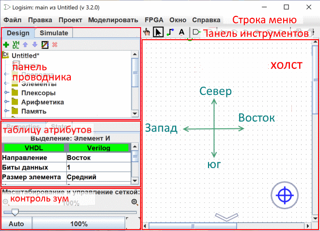

поверхность чертежа
поверхность чертежа - это действительно самая заметная часть Liogisim-evolution, на которой Вы рисуете свои схемы и их символ, чтобы в конце концов смоделировать операцию.

Он состоит только из нескольких элементов:
Горизонтальная и вертикальная прокрутка полосы: они работают, как и в большинстве программ, просто перетащите ползунки, чтобы переместить вид на другие части чертежа. С ними также можно манипулировать с помощью клавиатуры или мыши, используя следующие комбинации:
- Колесо мыши или кнопка со стрелкой вверх/вниз : вертикальная прокрутка
- колесо ALt-мыши или кнопка вправо/левой стрелки: горизонтальная прокрутка
- кнопка страница вверх : перейти в верхнюю часть страницы
- кнопка PgDn : перейти в нижнюю часть страницы
Индикаторы диапазона когда схема больше, чем область отображения индикаторов отображаются. Индикаторы, отображаемые в углах и/или по бокам, указывают направления, в которых растягивается чертеж. Ниже приведен пример индикаторов в верхней части страницы.

Кнопка центрирования  Он помещает центр диаграммы в центр рабочей поверхности.
Он помещает центр диаграммы в центр рабочей поверхности.
Кнопка 100% : соответствует масштабу для отображения диаграммы в ее реальном размере.
Кнопка Auto : подходит к масштабу так, чтобы вся диаграмма была видна.
The grid button : Справа от зума, Переключение между режимами поочерёдно "отображённая сетка" в режиме "невидимая сетка".
Справа от зума, Переключение между режимами поочерёдно "отображённая сетка" в режиме "невидимая сетка".
Далее: Меню.